O PEDES adota a metodologia das Políticas Orientadas por Missões (POM), que pode ser
entendida como a utilização do conhecimento científico para enfrentar problemas complexos. A POM,
portanto, é uma forma de enfrentar desafios sistêmicos da sociedade, cabendo ao Estado mobilizar-se em
torno daquilo que se quer atingir. Assim, o Estado tem um papel ativo de coordenar uma pauta comum aos
setores público e privado, além de impulsionar o desenvolvimento econômico e social por meio da inovação
e da tecnologia.
As Missões do PEDES são:
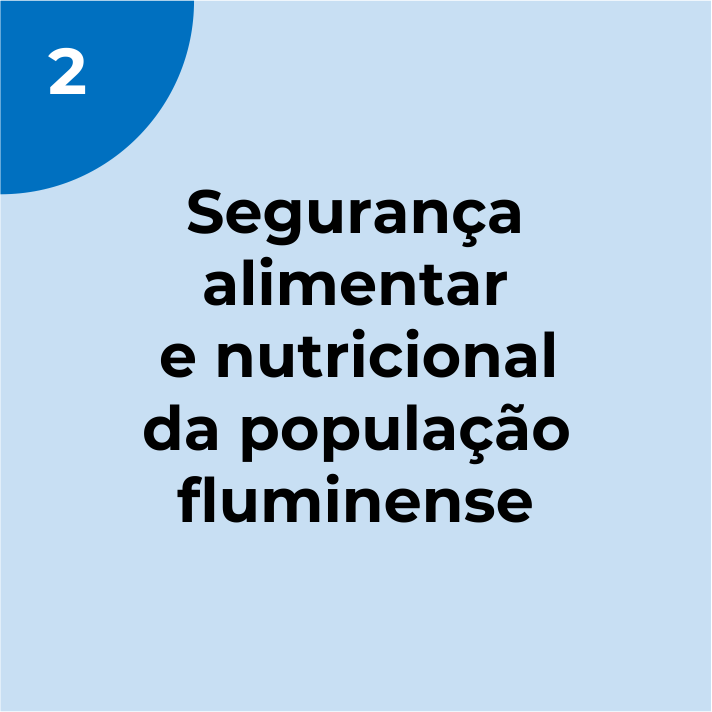
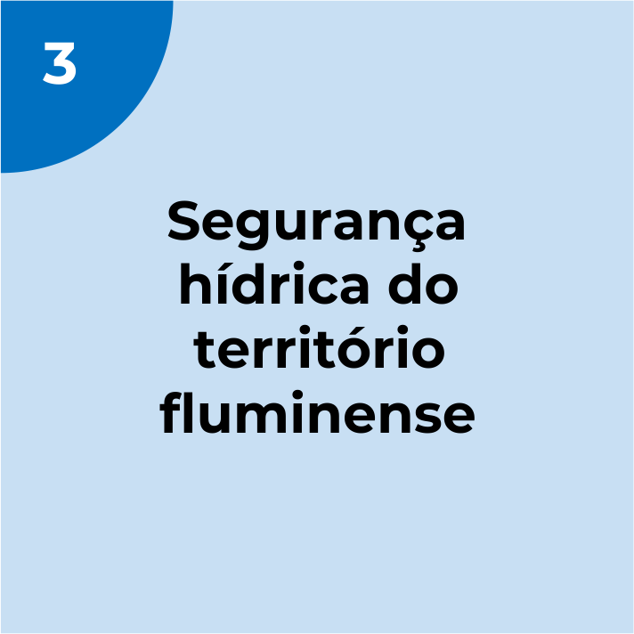
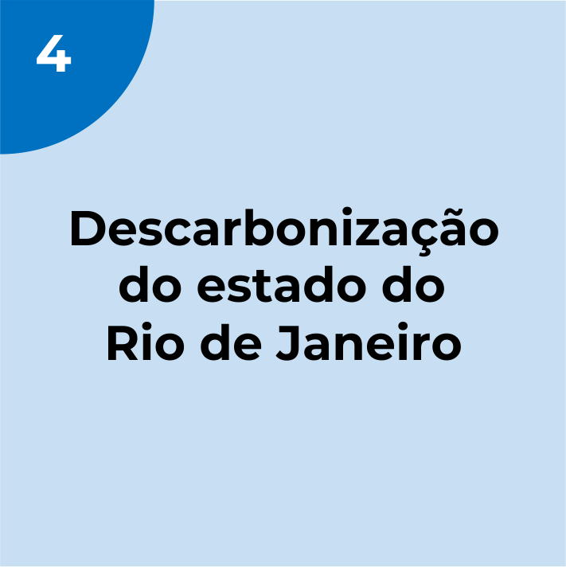
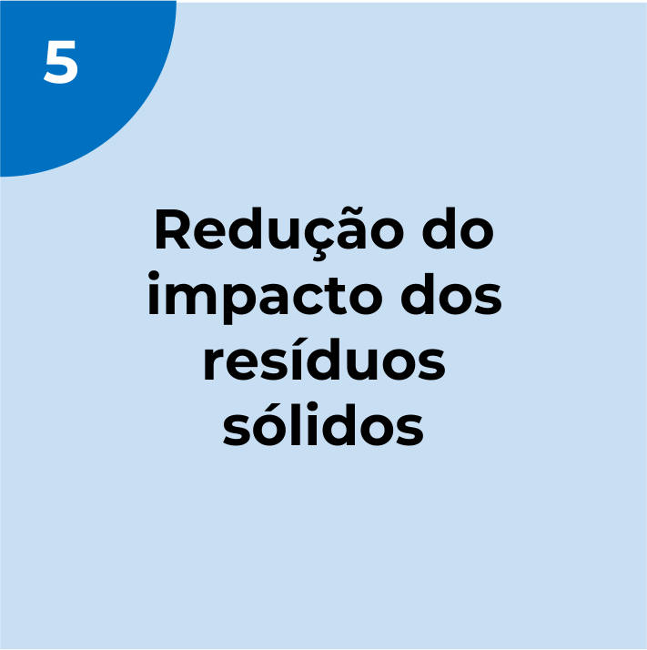
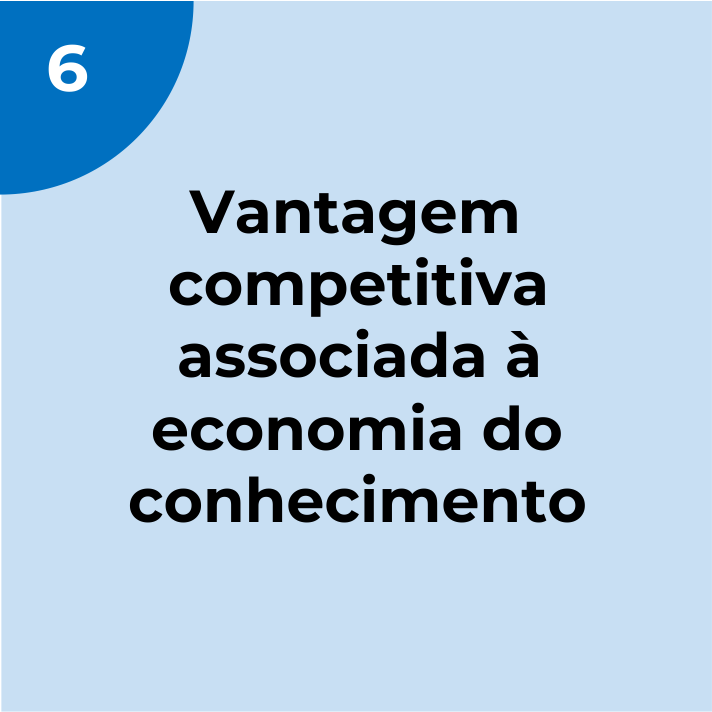
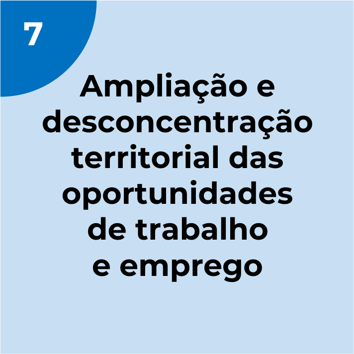
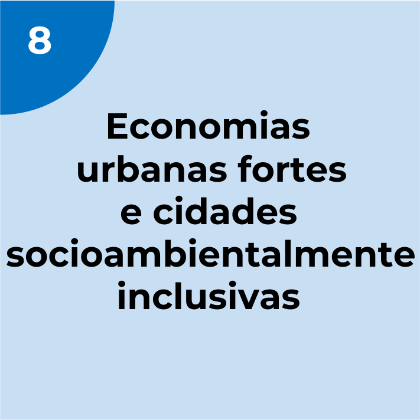
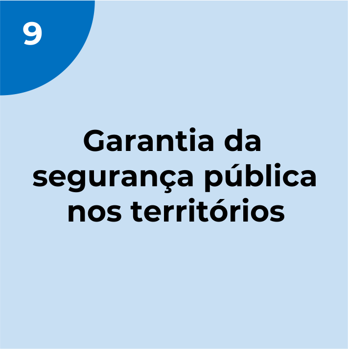
A missão Erradicação da Extrema Pobreza busca se contrapor à macrotendência de agravamento da
exclusão e das desigualdades sociais, identificada no diagnóstico do PEDES.
Do ponto de vista de direitos, a pobreza é um fenômeno que expressa e potencializa a exclusão
social
e as desigualdades, dificultando a garantia de direitos dos cidadãos.
Essa missão tem por fundamento erradicar a extrema pobreza a partir de três estratégias
complementares: suportar todos os cidadãos que se encontram abaixo da linha da extrema pobreza
por
meio de transferência de renda e outros benefícios que elevem o poder aquisitivo, construir vias
para que esses indivíduos e famílias adquiram autonomia de renda por meio de sua inclusão
socioprodutiva, e desenhar políticas públicas intersetoriais direcionadas à interrupção e
superação
do ciclo intergeracional da pobreza.
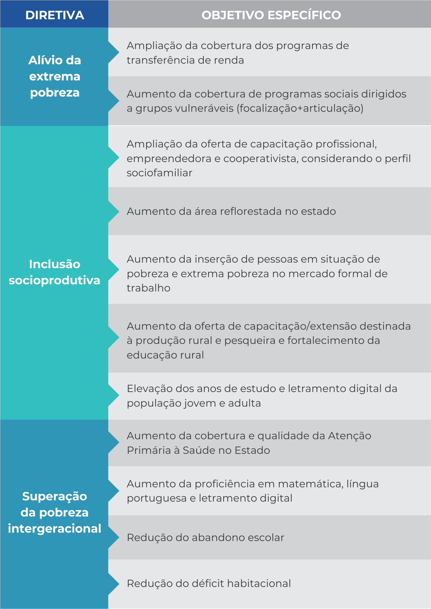
ODS relacionado:

A missão Segurança Alimentar e Nutricional da População Fluminense ressalta a importância de
combater
a fome e a falta de acesso a uma alimentação adequada e saudável, como garantia de um direito
social.
A insegurança alimentar e nutricional deve ser percebida para além de sua clara associação com a
pobreza, como privação de renda ou inserção laboral. Isto porque outros fatores afetam o acesso
à
uma alimentação adequada, desde a educação alimentar até a oferta de produtos variados e frescos
que
chegam à mesa com seus nutrientes preservados.
Essa missão tem como objetivo promover a segurança alimentar e nutricional da população
fluminense e
é orientada por duas estratégias: a promoção do acesso à alimentação adequada – incluindo a
fornecida em equipamentos públicos de segurança alimentar e nutricional –, e o fortalecimento da
agricultura familiar com sustentabilidade ambiental, proporcionando a produção e o abastecimento
de
alimentos de qualidade no estado.
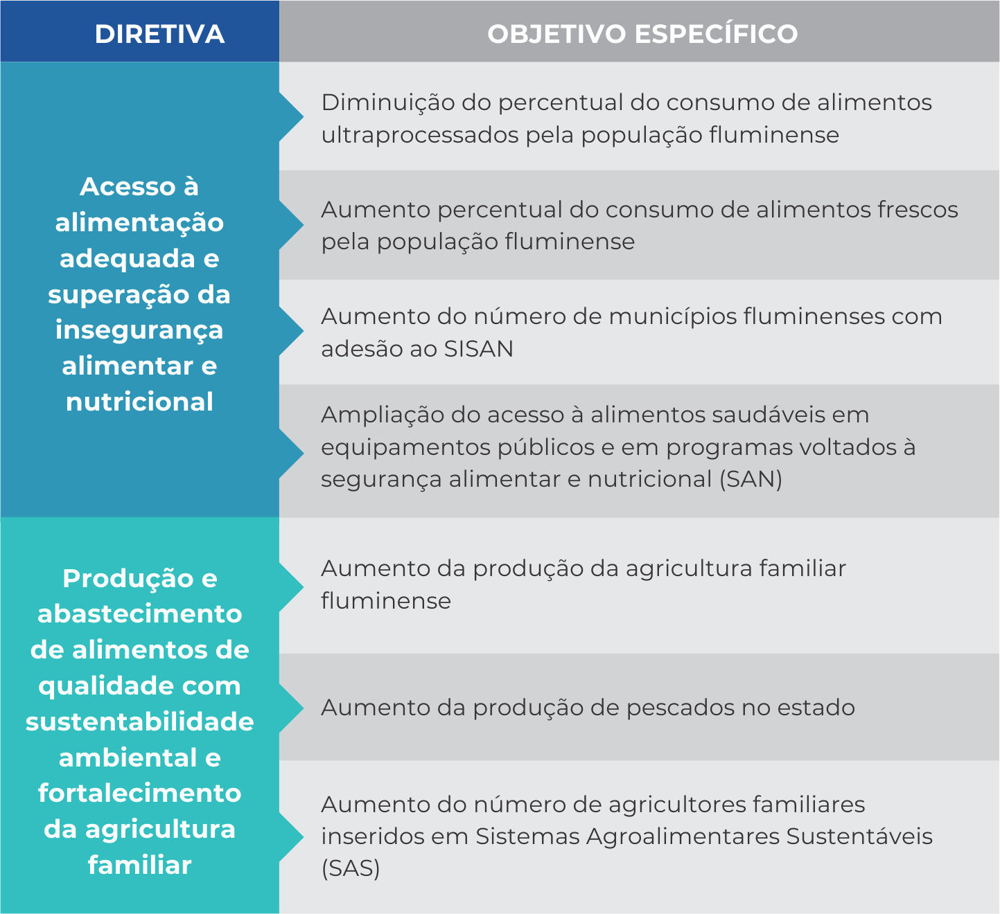
ODS relacionado:

A missão Segurança Hídrica do Território Fluminense tem como destaque a água como um recurso
fundamental para o desenvolvimento e a sustentabilidade de diversos setores, como agricultura,
indústria e energia.
A disponibilidade de água em quantidade e qualidade adequadas é essencial para o consumo humano,
atividades econômicas e manutenção dos ecossistemas. A adoção de medidas para garantir a
segurança
hídrica é ainda mais importante no Rio de Janeiro, estado com regiões que já sofrem com a ameaça
de
desabastecimento em períodos de estiagem.
As estratégias que compõem essa missão incluem a proteção de mananciais, a despoluição de rios e
demais corpos d’água, promoção do reuso industrial e o aumento da eficiência na distribuição de
água
para a população.
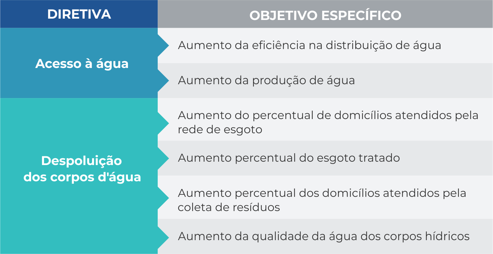
ODS relacionado:


A missão Descarbonização do Estado do Rio de Janeiro está vinculada à agenda de transição
energética,
além da preservação e recuperação de recursos naturais.
A redução da emissão de gases do efeito estufa, a manutenção e ampliação de florestas são ações
essenciais para mitigar os impactos das mudanças climáticas. Diferente de outras áreas do país
onde
a emissão se encontra associada à ocupação do solo, no Rio de Janeiro as emissões têm origem,
sobretudo, nos transportes urbanos – por conta do consumo de combustíveis fósseis e sua
produção.
Portanto, a missão de descarbonizar a economia fluminense está estreitamente vinculada à agenda
da
transição energética.
Já na perspectiva associada aos recursos naturais, a conservação e o reflorestamento de áreas
desmatadas contribui por seu potencial de sequestro de carbono na atmosfera. Além disso, a
descarbonização estimula o desenvolvimento econômico e social sustentável, devido ao incentivo à
inovação e a geração de empregos verdes.
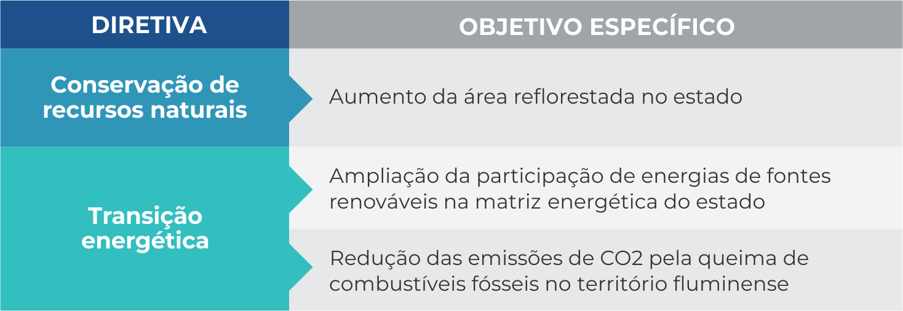
ODS relacionado:


A missão Redução do Impacto dos Resíduos Sólidos é uma das missões contidas no PEDES de grande importância do ponto de vista ambiental e para o desenvolvimento. O adequado manejo dos resíduos sólidos é fundamental ao desenvolvimento sustentável. A prática de destinação inadequada de resíduos é responsável por graves danos ambientais, notadamente a contaminação do solo e da água, com impacto importante para a saúde coletiva. De modo a minimizar esses efeitos negativos, a missão considera – além da destinação adequada dos resíduos sólidos – o estímulo à economia circular, com a adoção de práticas que visem o reuso ou reciclagem de materiais descartados, ou seu aproveitamento energético.
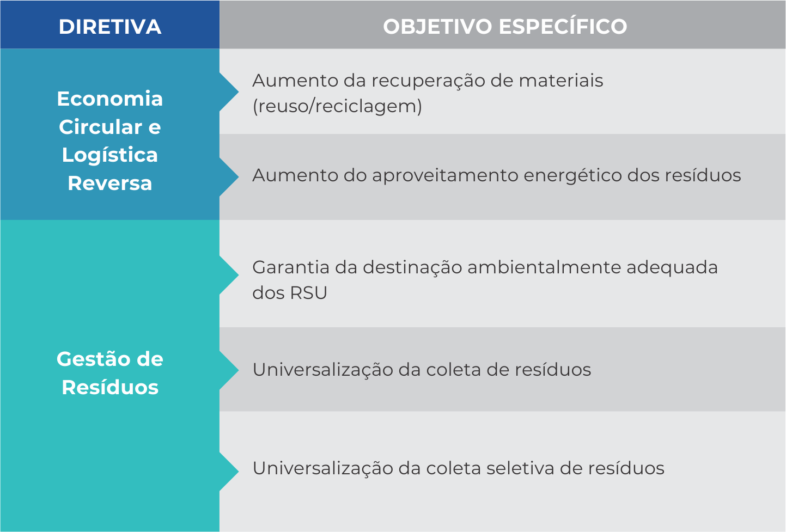
ODS relacionado:

A missão Vantagem Competitiva Associada à Economia do Conhecimento traz a inovação como ponto
essencial de incentivo pelo estado.
O adensamento do conhecimento incorporado aos processos produtivos é essencial para o
desenvolvimento de produtos inovadores e competitivos, o que pode ser feito por meio da
capacitação
dos trabalhadores, investimento em pesquisa e o desenvolvimento ou a adoção de tecnologias de
ponta.
Três estratégias orientam essa missão: a promoção da inovação impulsionada por setores dinâmicos
e
estabelecidos e grandes empresas – sobretudo dos setores de Petróleo e Gás, da Economia da Saúde
e
da Economia Verde; a difusão da inovação em pequenas e médias empresas, principalmente por meio
da
transferência de tecnologia de instituições científico-tecnológicas para o setor produtivo; e o
estímulo ao empreendedorismo de base científica e tecnológica, modalidade que possui alto grau
de
inovação e potencial de geração de empregos altamente qualificados.
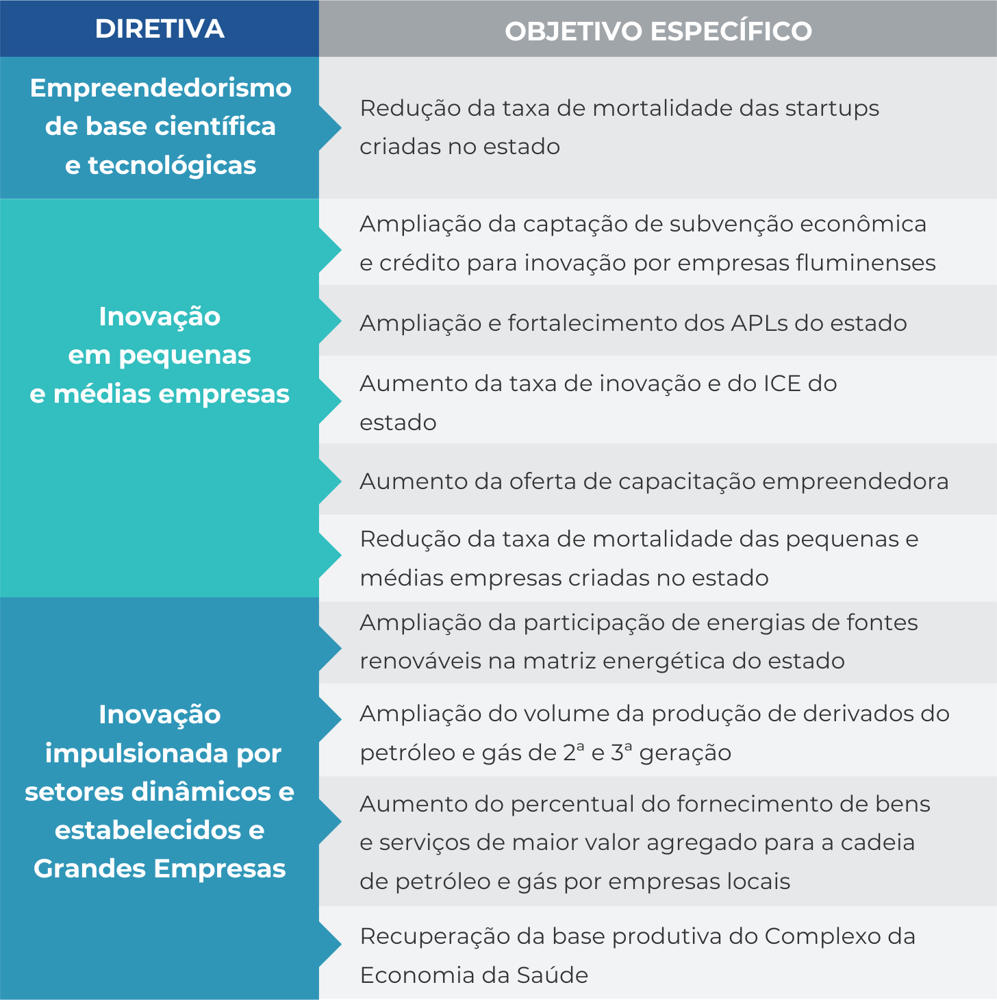
ODS relacionado:

A missão Ampliação e Desconcentração Territorial das Oportunidades de Trabalho e Emprego
associa-se
diretamente com o eixo territorial característico do PEDES.
A partir do diagnóstico da alta concentração de vagas formais de emprego e perspectivas de
trabalho
na Região Metropolitana, sobretudo na capital – mesmo considerando a distribuição percentual da
população –, essa missão visa, simultaneamente, ampliar e desconcentrar territorialmente as
oportunidades de trabalho e emprego no estado, promovendo um desenvolvimento socioeconômico mais
equilibrado e justo.
A estratégia que orienta essa missão é a promoção do desenvolvimento a partir das
potencialidades e
dinâmicas locais e regionais estabelecidas – buscando explorar a riqueza do território em
sentido
amplo, por meio da geração de valor a partir dos ativos culturais, históricos, ambientais e
produtivos específicos dos territórios, principalmente no interior do estado.
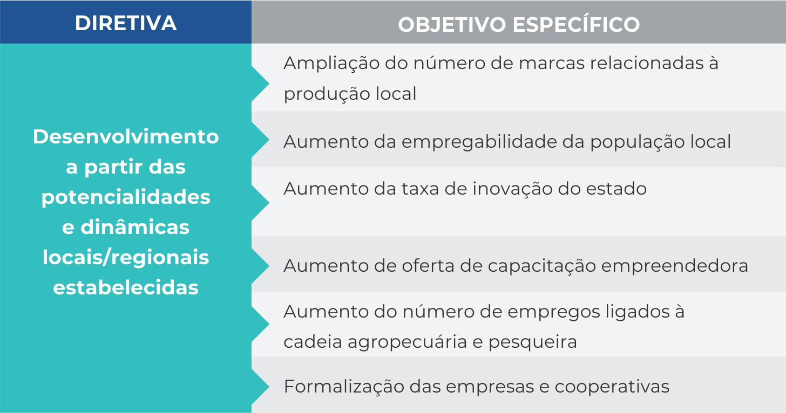
ODS relacionado:


A Missão 8: Economias Urbanas Fortes e Cidades Socioambientalmente Inclusivas tem como objetivo
elevar todos os municípios do estado do Rio de Janeiro a níveis adequados de qualidade de vida,
equilíbrio ambiental e desenvolvimento social e econômico.
Historicamente, o processo de urbanização do estado tem gerado exclusões para diversos segmentos
da
população, resultando em uma configuração política, econômica e social dos territórios que impõe
desafios à construção de uma sociedade mais justa e menos desigual. Nesse contexto, as cidades,
os
territórios e as agendas locais tornam-se elementos centrais para o desenvolvimento
fluminense.
Para a consecução desta missão, a promoção dos direitos sociais dentro do espaço vivido das
cidades
é fundamental. Isso inclui, especialmente, os direitos à moradia, transporte, lazer, saúde,
segurança, ambiente, saneamento adequado e educação. Paralelamente, é crucial fomentar a
integração
comunitária, a cultura da tolerância, a participação cidadã e a cooperação entre entes públicos
e
agentes privados. Adicionalmente, a inclusão produtiva, por meio do fortalecimento do trabalho e
do
emprego – considerando inclusive as novas tendências e dinâmicas do mercado contemporâneo –,
representa outro fator de alta relevância para o alcance dos objetivos propostos.
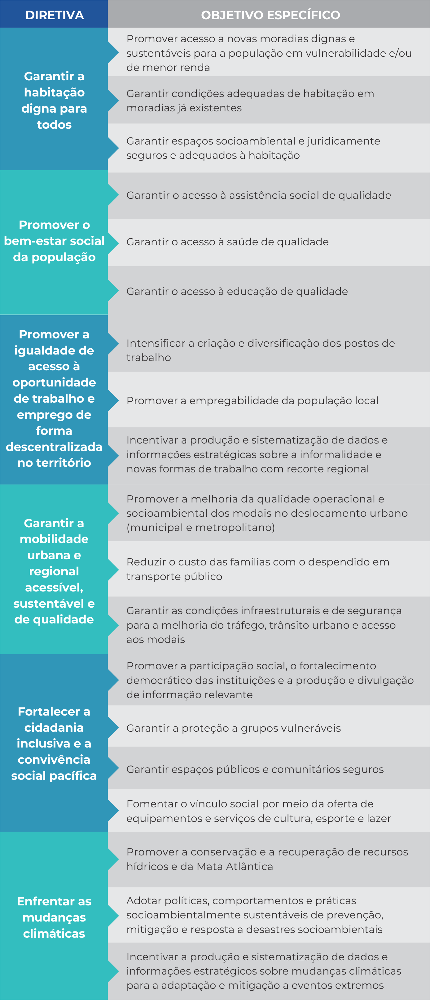
ODS relacionado:

A missão Garantia da Segurança Pública nos Territórios traz para o primeiro plano a discussão
sobre a
vida e as dimensões que configuram a qualidade de vida das pessoas no território, e os impactos
que,
sobretudo, a influência de grupos armados e a ocorrência de confrontos armados têm trazido para
a
população residente, comerciante e trabalhadora nestes territórios.
É importante destacar que, neste contexto, servidoras e servidores públicos também estão
diretamente
afetados, considerando seu trabalho no território. Policiais estão expostos a confrontos e são
vitimados, precisando se considerar também toda uma gama de profissionais que atuam em unidades
de
saúde, assistência social e educação que exercem suas atividades em contexto de instabilidade e
insegurança, tendo que lidar com os efeitos desta realidade em todas as dimensões.
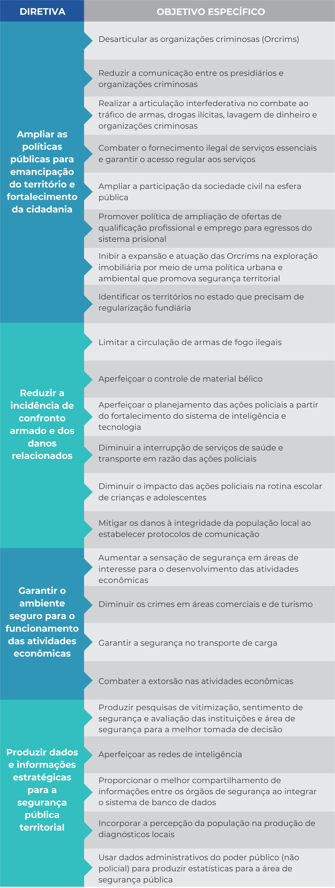
ODS relacionado:

A missão Promoção das Igualdades Racial e de Gênero está alicerçada em um elemento fundamental: a desigualdade. Com efeito, mais do que a desigualdade, mas a mitigação e a superação das desigualdades – em seu uso imperioso no plural, de acordo com a própria literatura científica sobre a temática. Desigualdade de renda, em parâmetros de saúde, educação e outros elementos de políticas sociais, desigualdade segundo parâmetro de territorialidade e, no caso específico desta missão, desigualdade segundo gênero e características étnico-raciais.
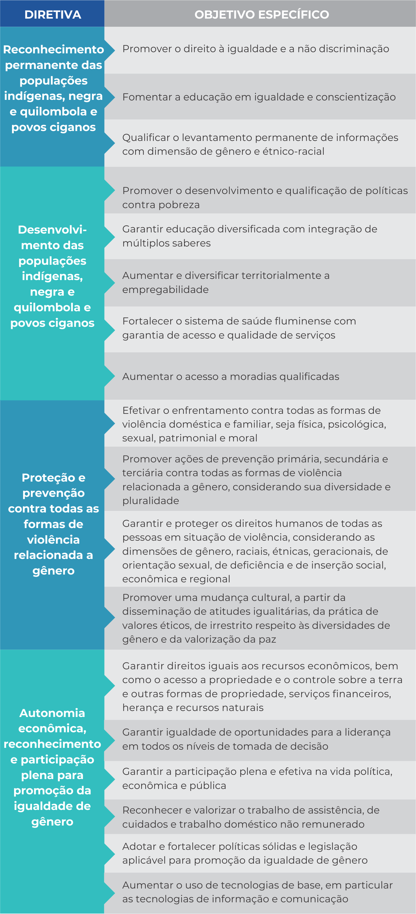
ODS relacionado:

As missões orientam o desenvolvimento econômico regional de longo prazo, inovativo e socioambientalmente
sustentável do Estado do Rio de Janeiro e estão alinhadas aos Objetivos de Desenvolvimento
Sustentável
(ODS) da ONU e à Agenda 2030, da qual o estado é signatário.
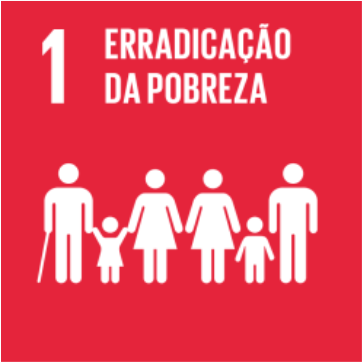
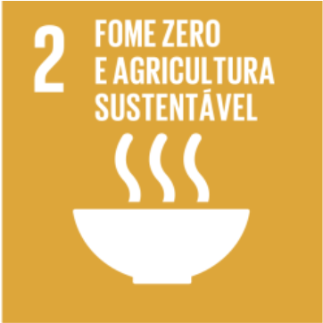
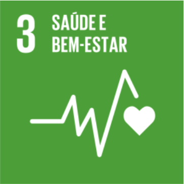
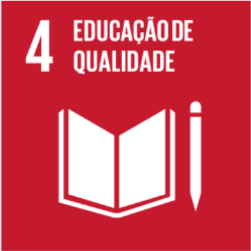
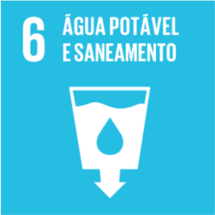
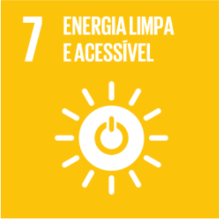
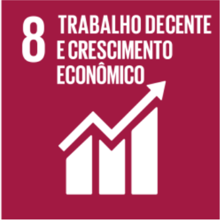
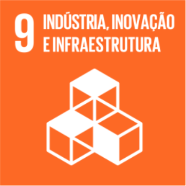
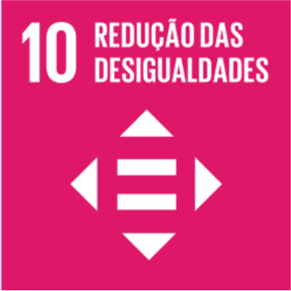
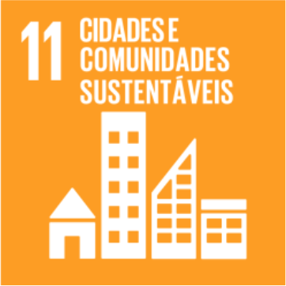
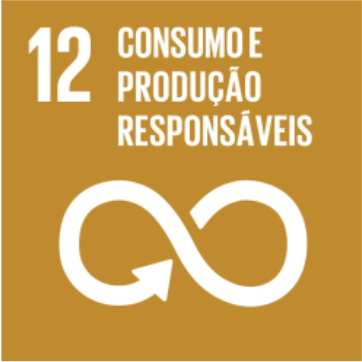
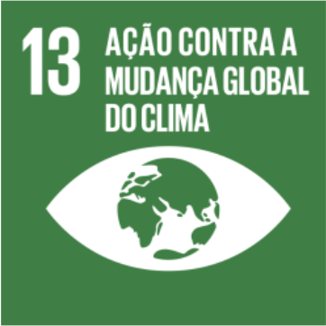
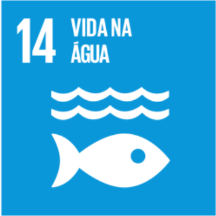
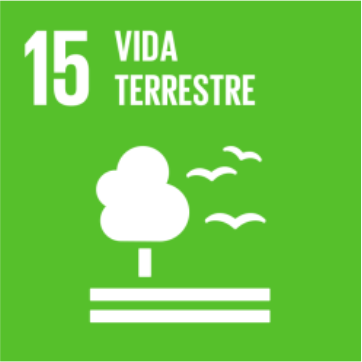
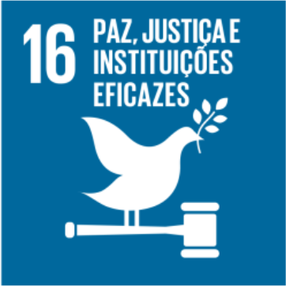
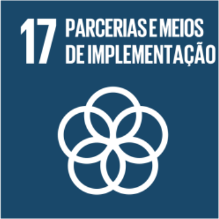
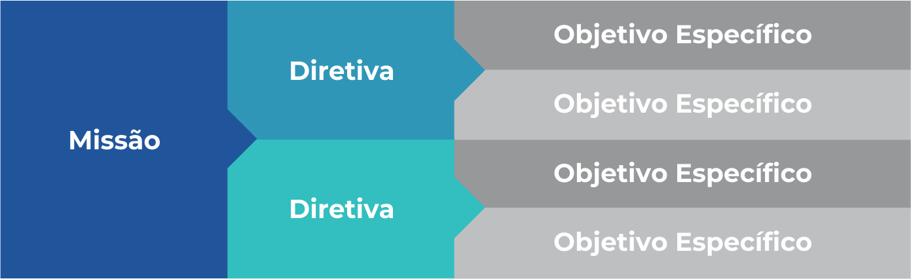